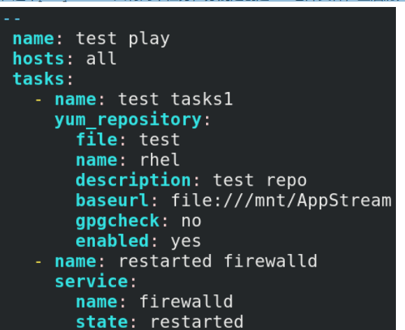

部署ansible
| Bash |
|---|
| yum install -y ansible-core
yum install -y ansible-navigator
ansible-navigator images
|
配置文件
管理配置文件
ansible的配置文件名为ansible.cfg,RHEL8版本默认位于/etc/ansible/ansible.cfg 。此
文件定义了连接受管主机的方法、权限以及受管主机清单文件等信息。
在RHEL9中，需要使用命令来初始化一个配置文件
ansible-config init > ansible.cfg
1.ansible.cfg的读取顺序
ansible.cfg可能会位于多个地方，ansible会在以下位置按顺序读取ansible.cfg文件：
1. 使用-c 或--config 指定配置文件的路径
2. 使用环境变量ANSIBLE_CONFIG
3. 当前目录下的ansible.cfg文件
4. 当前用户家目录下的ansible.cfg文件
5. 默认配置文件/etc/ansible/ansible.cfg
可以使用 ansible --version 查看当前所使用的配置文件
| Bash |
|---|
| [devops@workstation ~]$ ansible --version
|
2.ansible.cfg参数配置
ansible.cfg使用分段式配置，每个段使用"[]"包含，每个段下方使用key=value方式定义
ansible工作方式。
主要的配置段有[defaults]和[privilege_escalation]
[defaults] 用来定义通用默认配置
[privilege_escalation] 用于定义在受管主机上的提权配置
[defaults]中的配置参数
1.inventory = /etc/ansible/hosts
定义inventory主机清单文件的位置，默认清单文件是/etc/ansible/hosts
2.forks = 5
与受管主机通信时的并行的进程数，默认是5
3.remote_user = root
设置受管主机的用户，默认是root,如果未设置则是以控制节点当前用户身份
4.ask_pass = True
在连接受管主机是是否要输入密码,默认是需要的。配置好SSH公钥认证则可以自动连接，无需密码。
[privilege_escalation]中的配置参数
become=True 在受管主机是否进行提权
become_method=sudo 提权方式为sudo ，默认是su
become_user=root 提权后的用户
become_ask_pass=False 提权时是否需要密码
ansible.cfg 配置文件示例
| Bash |
|---|
| [defaults]
inventory=~/ansible/inventory
remote_user=alice
[privilege_escalation]
become=True
become_method=sudo
become_user=root
become_ask_pass=False
|
inventory主机清单文件
inventory文件位置是在ansible.cfg中定义的
inventory文件就是受管主机的清单，定义了哪些主机将被ansible管理。
这些主机列表可以进行分组，也可以使用变量来定义主机和主机组。
inventory 文件的内置变量
ansible_ssh_host # 要连接的主机名 ansible_ssh_port # 端口号，默认22
ansible_ssh_user # ssh连接时默认使用的用户名 ansible_ssh_pass # ssh连接时的密码
ansible_sudo_pass # 使用sudo连接用户时的密码 ansible_ssh_private_key_file # 秘
钥文件如果不想使用sshagent管理时可以使用此选项 ansible_shell_type # shell类型，默
认sh ansible_connection # SSH连接类型：local、ssh、paramiko在ansible 1.2之前默
认paramiko ansible_python_interpreter # 用来指定Python解释器的路径，同样可以指定
ruby、Perl的路径
inventory 文件的写法
可以写主机名或ip地址：
192.168.10.12
node1.example.com
node2.example.com
指定主机范围：
192.168.10.[11:20] 表示192.168.10.11-192.168.10.20 的主机
192.168.[0:3].[1:254] 表示192.168.0.1-192.168.3.254网络内的主机
node[1:30].example.com 表示node1.example.com-node30.example.com网络内的主机
定义主机组：
可以使用分组的方法来指定受管主机，这样就可以针对具体的组来执行ansible指令。
1. 一个主机可以属于多个组
2. 组可以嵌套
3. 组使用[]来定义
4.嵌套组使用:children来标识
| Bash |
|---|
| [dev]
node1
[test]
node2
[prod]
node3
node4
[balancers:children]
dev
test
prod
|
默认组：
在inventory中默认就存在两个组，分别是all和ungrouped
all: 表示inventory中的所有主机ungrouped: 表示不在任何组中的主机
列出inventory中的主机
1.列出所有的主机
| Bash |
|---|
| $ ansible all --list-hosts
|
2.列出dbserver组中的主机
| Bash |
|---|
| $ ansible prod --list-hosts
|
3.列出dev组中的主机
| Bash |
|---|
| $ ansible dev --list-hosts
|
测试所有受管主机的连通性
| Bash |
|---|
| [devops@workstation ansible]$ ansible all -m ping
|
即时命令和文档查看
运行Ad-hoc命令
ansible执行有两种方式，一种是ad-hoc，另一种是playbooks
什么是ad-hoc命令
ad-hoc表示即时的意思
如果我们敲入一些命令去比较快的完成一些事情,而不需要将这些执行的命令特别保存下来, 这样的命
令就叫做 ad-hoc 命令。
ansible运行ad-hoc 命令
| Bash |
|---|
| #ansible webservers -m ping
|
ansible语法格式
#ansible 受管主机 -m 模块名称 -a '模块参数'
-i 指定inventory文件，默认是读取ansible.cfg中定义的inventory文件
-m 指定模块名称，默认是command模块
-a 传递参数给模块
受管主机必须是已经在inventory文件中定义的主机，可以写主机名也可以写主机组名。
| Bash |
|---|
| [devops@workstation ansible]# ansible all -a 'hostname'
|
ansible 命令其他选项
-u 指定remote_user
-b 提权
--become-user=USER 提权的用户
--become-method=sudo 提权的方法（可以是su,sudo）
ansible模块
ansible是基于模块工作的，所有批量操作的操作都是有各个模块完成。在ansible中有大量的模块
可有使用，官方模块列表：
https://docs.ansible.com/ansible/latest/modules/modules_by_category.html
ansible模块的幂等性
ansible绝大多数模块都天然具有幂等性，只有极少数模块模块不具备幂等性。所谓的幂等性是指多
次执行同一个操作不会影响最终结果。例如，ansible的ansible.builtin.yum模块安装rpm包
时，如果待安装的包已经安装过了，则再次或多次执行安装操作都不会真正的执行下去。再例如，
ansible.builtin.copy模块拷贝文件时，如果目标主机上已经有了完全相同的文件，则多次执行
ansible.builtin.copy模块不会真正的拷贝。ansible具有幂等性的模块在执行时，都会自动判
断是否要执行。
获取模块帮助
可以使用ansible-doc获取模块名称和模块的使用帮助。
| Bash |
|---|
| [devops@workstation ~]$ ansible-doc -l
|
获取相应模块的使用帮助信息
# ansible-doc Module_Name
| Bash |
|---|
| [difu@control ~]$ ansible-doc yum
|
常用模块
1.ansible.builtin.command 模块
ansible.builtin.command 模块是ansible 的默认模块，ansible.builtin.command 模块
可以在受管主机上执行Linux命令，但是ansible.builtin.command模块不能使用重定向、管道和
变量
command模块使用
| Bash |
|---|
| [devops@workstation ansible]$ ansible all -m command -a 'cat /etc/redhat-release'
|
2.ansible.builtin.shell 模块
ansible.builtin.shell模块作用就是在受管主机上执行shell命令，其用法和
ansible.builtin.command模块一样，
但是ansible.builtin.shell模块支持管道符、重定向等操作。(不支持受管主机上的别名命令)
shell模块使用
| Bash |
|---|
| [devops@workstation ansible]$ ansible all -m shell -a 'echo Hello >> test'
|
command和shell 模块不支持幂等性，即这两个模块每次都会重复执行
3.ansible.builtin.file 模块
ansible.builtin.file模块是一个常用的模块，用于管理目录或文件的属性，也可以创建文件和
目录
ansible.builtin.file模块支持很多的参数，主要有：
path: 执行需要操作的文件或目录，也可以使用dest来代替path
group: 设置文件或目录的属组
owner: 设置文件或目录的属主
mode: 设置文件或目录的权限，可以使用0744这种格式，也可以使用'u=rwx,g=r,o=r'
或'u+wx,g+x'
recurse: 是否递归修改文件的属性，默认为"no"
src: 创建链接文件时，指明源文件的路径
setype: 设置selinux的类型
state: 设定文件或目录的状态，其值有：
directory: 如果path中的目录不存在则递归创建
touch: 创建文件
link: 设置软连接
absent: 将目录或文件递归删除
ansible.builtin.file模块使用
1.递归创建目录，并设置权限和属主、属组
| Bash |
|---|
| [devops@workstation ansible]$ ansible dev -m file -a 'path=/server/tools group=root owner=root mode=0770 state=directory'
|
2.在/server/tools目录下创建一个test的文件 (/server/tools 这个目录必须已存在)
| Bash |
|---|
| [devops@workstation ansible]$ ansible dev -m file -a 'path=/server/tools/test state=touch'
|
4.ansible.builtin.user 模块
ansible.builtin.user模块可以用来添加、删除、修改用户，设置用户密码
ansible.builtin.user模块的主要参数：
name: 要操作的用户名
state: 设置用户的状态，删除或创建用户，其值有"present" 和"absent",present表示创
建，默认值，absent表示删除
group: 设置用户的基本组
groups: 设置用户的附加组
uid: 设置用户的uid
home: 设置用户的家目录
shell: 设置用户的默认shell
password: 设置用户的密码，此处的密码必须是一个密文。在playbook中可以使用
password: "{{ your_passwd | password_hash('sha512') }}"这种方式设置密码。
ansible.builtin.user模块使用
| Bash |
|---|
| [devops@workstation ansible]$ ansible dev -m user -a 'name=www uid=2000
shell=/sbin/nologin'
|
5.ansible.builtin.group 模块
ansible.builtin.group模块用来创建或删除组
ansible.builtin.group模块常用的参数：
name: 组的名称
gid: 设置组的GID
state: 设置组的状态，默认是present, absent表示删除
ansible.builtin.group模块使用
| Bash |
|---|
| [devops@workstation ansible]$ ansible dev -m group -a 'name=apache
gid=800'
|
6.ansible.builtin.script模块
ansible.builtin.script模块用于在受管主机上执行脚本。 ansible 会将本地脚本传到受管主
机上，然后在受管主机上执行脚本，在执行脚本时，使用的是受管主机的shell环境。
ansible.builtin.script模块主要参数：
chdir: 在受管主机上先切换到此目录下，再执行脚本
creates: 当这个文件存在时，不执行脚本
removes: 当这个文件不存在时，执行脚本
ansible.builtin.script模块使用
| Bash |
|---|
| [devops@workstation ansible]$ ansible dev -m script -a 'creates=/tmp/a.txt
test.sh'
|
| Bash |
|---|
| [difu@control ansible]$ ansible all -m script -a 'creates=/etc/fstab
test.sh'
|
/etc/fstab这个文件存在，所以脚本不会被执行
7.ansible.builtin.yum_repository模块
ansible.builtin.yum_repository模块可以实现为远程主机配置一个完整的YUM源
主要参数：
file: 配置文件的名字。不需要".repo"
name: 仓库id
description： 仓库描述
baseurl: 仓库地址
gpgcheck: 是否校验密钥
enabled: 是否激活仓库，默认是yes
state: repo文件的状态，默认是present
ansible.builtin.yum_repository模块使用
| Bash |
|---|
| [devops@workstation ansible]$ ansible dev -m yum_repository -a "file=Base
name=B description='base repo' baseurl=file:///mnt/BaseOS gpgcheck=no"
|
8. ansible.builtin.yum模块
ansible.builtin.yum模块用于安装、删除、更新软件包
主要的参数有：
name: 软件包的名字，可以使用"*"进行通配
list: 列出软件包
state: 状态 ，可以写的值有：
present和installed 都表示安装包，present是默认值
latest 表示安装最新版本的包
absent/removed 表示删除包
使用ansible.builtin.yum模块安装vim
| Bash |
|---|
| [devops@workstation ansible]$ ansible dev -m yum -a 'name=httpd
state=latest'
|
安装包组
| Bash |
|---|
| [devops@workstation ansible]$ ansible dev -m yum -a 'name="@Development
Tools" state=latest'
|
9.ansible.builtin.service 模块
ansible.builtin.service模块用于服务管理和控制
主要参数：
name: 服务名称
enabled: 设置服务是否开机自启，默认是no
state: 设置服务的状态。状态有：
started(启动)
stopped(停止)
restarted(重启)reloaded(重新加载配置)
重启sshd服务
| Bash |
|---|
| [devops@workstation ansible]$ ansible all -m service -a 'name=sshd
state=restarted'
|
10. ansible.builtin.copy模块
ansible.builtin.copy模块用于将文件拷贝到远程主机上
ansible.builtin.copy模块的主要参数：
src: 指定拷贝的源文件的路径，如果拷贝的目录后面有"/"，则只把目录中的内容拷贝至远端，
目录后面没有"/",则把目录自身拷贝至远端。
dest: 指定拷贝的目标路径
content: 将给定的字符串内容保存至远程主机上,content会替代src参数
backup: 是否对目标文件进行备份，默认是no
owner: 设置目标文件的属主
group: 设置目标文件的属组
mode: 设置目标文件的权限
| Bash |
|---|
| [devops@workstation ansible]$ ansible all -m copy -a 'src=test.txt
dest=/etc/motd mode=644'
|
更多模块使用方法可以访问官方文档：
https://docs.ansible.com/ansible/latest/plugins/module.html
playbook编写
创建并运行playbook
playbook(剧本)
playbook是ansible一系列模块和命令的集合，使用YAML语言编写，可以编排有序的执行过程（就像电影会根据剧本向前发展），
适合复杂的部署流程。
YAML的语法格式
1. 以"---"开头，表明这是一个yaml的文件。非必需，不写也没有影响
2. 以"#"作为注释
3. 同样层级关系的 必须 保持同样的 缩进宽度
模块中的参数，只需要比当前模块有更多缩进即可。
无需与其他模块中的参数竖直对齐。
同一tasks中的模块必须要竖直对齐
4. 区分大小写
5. 使用"- "(一个减号和一个空格)作为一个列表项
- 一年级
- 二年级
- 三年级
6. 使用key: value(冒号+空格)作为一个字典，字典一般是列表项的属性
playbook的组成
1. 一个playbook是由一个play或多个plays组成
2. 每一个plays是由 "name"、 "hosts"、 "tasks" 等多个项组成，其中必须包含"hosts"和"tasks" 这个两个项。
hosts: 指定受管主机
tasks: 定义将要在受管主机上运行的任务列表,一般是由多个模块构成
| Bash |
|---|
| ---
- name: 任务一
hosts: webservers
tasks:
- name: 复制文件
ansible.builtin.copy:
src: testpage
dest: /var/www/html/index.html
group: apache
owner: apache
mode: 0660
- name: 重启httpd
ansible.builtin.service:
name: httpd
state: restarted
- name: 任务二
hosts: dbserver
tasks:
- name: 重启服务
ansible.builtin.service:
name: mariadb
state: restarted
|
上面这个playbook是由两个plays组成，分别是对两个主机组执行任务。
playbook中的缩进：
1.同级的对象须有相同的缩进
2.子对象必须比父对象有更多的缩进
创建一个playbook文件
playboobk文件通常会以".yml"作或".yaml"为后缀
为了在使用vim编辑playbook时候方便，在家目录下修改下vim的默认配置
在当前用户家目录下编辑~/.vimrc
添加一行配置"autocmd filetype yaml setlocal ai ts=2 sw=2 et"
| Bash |
|---|
| [difu@control ~]$ vim ~/.vimrc
autocmd filetype yaml setlocal ai ts=2 sw=2 et
|
创建playbook
注意： tasks下每个name中只能有一个任务
[difu@control ansible]$ vim test1.yml
下图为 RHCE8范例
在RHCE9中，yum_repository模块名添加 ansible.builtin. 即可

这个playbook只有一个任务，在RHCE9中需要使用ansible.builtin.yum_rpeository模块，
检查playbook文件语法
使用--syntax-check选项检测语法，如果有语法上的错误，则会给出相应的提示。
以下为RHCE8中执行命令方式，在RHCE9中仍然适用。
| Bash |
|---|
| [devops@workstation ansible]$ ansible-playbook --syntax-check test1.yml
|
RHCE9方式：
| Bash |
|---|
| [devops@workstation ansible]$ ansible-navigator run --syntax-check test1.yml -m stdout
|
注意：在RHEL9中，以下操作仍然适用。
运行playbook
使用ansible-playbook运行playbook
ansible-playbook常用的选项
--syntax-check 检查playbook的语法
--list-tasks 列出将要被执行的tasks
-C 模拟运行playbook
-v /-vv / -vvv 显示运行playbook的详细过程
playbook执行是从上至下依次顺序执行，当某个任务在某个主机上执行错误或失败时，后续所有的任务都不再执行。
| Bash |
|---|
| [devops@workstation ansible]$ ansible-playbook test1.yml
|
执行结果

在test1.yml上继续扩充
现在这个playbook一共有两个任务，分别是创建YUM仓库文件，重启防火墙.

执行结果
定义tasks的一些细节
1.一个tasks包含一个或多个任务，每个任务是由ansible对应的模块来完成
2.每个任务都可以加上name项，name只是一个描述任务的语句，可以定义在任何地方(也可以省略不写)
3.tasks中还可以通过include和import来导入其他的playbook文件
使用ansible vault加密
为什么要加密
在playbook或主机清单中，通常会为了配置方便，可能会把密码或密钥等敏感数据以明文的方式存储
在playbook或inventory文件中，很明显这样是不安全的，ansible已经考虑到这个情况，可以使
用ansible-vault对敏感数据进行加密。
ansible-valut
ansible-vault可以用来创建、编辑、加密、解密和查看文件。ansible-vault可以对ansible中
的任何文件进行加密，包括playbook文件，inventory文件，变量文件，tasks文件，roles中的文件。
使用ansible-vault加密文件
加密inventory文件
对已存在的文件进行加密
| Bash |
|---|
| [devops@workstation ansible]$ ansible-vault encrypt inventory
New Vault password: （设置密码）
Confirm New Vault password: （确认密码）
Encryption successful
|
加密之后，inventory文件就变成密文了
| Bash |
|---|
| [devops@workstation ansible]$ cat inventory
$ANSIBLE_VAULT;1.1;AES256
30636162333430613664393161663662613934313563323736383066316135346236376664313664
3932366563326634383737353161386534386462643733380a663834303238373637376434396135
66643535383535383963373233316362633630306535333332373438376162303661356463633866
3935653939363132310a376132326437396364313932396238623832383261613862633135356464
39636630346530396130303062316433643436343863626534353537353563313134386436373564
64303234363638336333346631626531386339643364623735376639326566633537646234393866
66393439373861393832616537323733643133643836346562666466336664363765316331663138
63323365366465623363353438323662386163373961646631346164633234363438353831663465
6233
|
运行ad-hoc命令或playbook 就会出错，因为无法读取inventory文件
| Bash |
|---|
| [devops@workstation ansible]$ ansible all -m ping
[WARNING]: * Failed to parse /home/devops/ansible/inventory with yaml plugin: Attempting
[WARNING]: * Failed to parse /home/devops/ansible/inventory with ini plugin: Attempting
[WARNING]: Unable to parse /home/devops/ansible/inventory as an inventory source
[WARNING]: No inventory was parsed, only implicit localhost is available
[WARNING]: provided hosts list is empty, only localhost is available. Note that the impli
|
需要加上--ask-vault-pass ，提示输入密码才能运行
| Bash |
|---|
| [devops@workstation ansible]$ ansible dev -m ping --ask-vault-pass
Vault password: (输入密码)
node1 | SUCCESS => {
"ansible_facts": {
"discovered_interpreter_python": "/usr/libexec/platform-python"
},
"changed": false,
"ping": "pong"
}
|
创建一个加密的playbook
创建一个新文件并进行加密
| Bash |
|---|
| [devops@workstation ansible]$ ansible-vault create site.yml
New Vault password: （设置密码）
Confirm New Vault password: （确认密码）
---
- name: test
hosts: all
tasks:
- name: test1
ansible.builtin.service:
name: firewalld
state: stopped
|
查看加密后的密文
| Bash |
|---|
| [devops@workstation ansible]$ cat site.yml
$ANSIBLE_VAULT;1.1;AES256
32393938626532336437303434336132313261313437353730333732343935663437633731613266
3039353439663130626436373466623362383966626338640a623366323439663537613239646239
37323461356162643165653864633236623738626233313563373930373864333964633761613132
3534343361373938340a633031623364653935613936343864363430653064346437356364626533
61353134356131643037613565313466623639316130653862396165376466643830643063353437
62346439333835353762366533323961373038656164353761326662303231353130616564306236
63326363623261386664323762613263343565323064626135336465636462353433623930353865
62633432323536303932336364643135653032646566343738393764393661323438396662653765
31646462656238653038633939393862663631343032336432383230396564353562
|
解密被加密的文件
| Bash |
|---|
| [devops@workstation ansible]$ ansible-vault decrypt inventory
Vault password:
Decryption successful
|
执行加密的playbook
直接执行会提示错误，需要加--ask-vault-pass
| Bash |
|---|
| [devops@workstation ansible]$ ansible-playbook site.yml
ERROR! Attempting to decrypt but no vault secrets found
|
| Bash |
|---|
| [devops@workstation ansible]$ ansible-playbook site.yml --ask-vault-pass
Vault password: （输入密码）
PLAY [test] *****************************************************************************
TASK [Gathering Facts] ******************************************************************
ok: [node1]
ok: [node4]
ok: [node3]
ok: [node2]
ok: [node5]
TASK [test1] ****************************************************************************
changed: [node3]
changed: [node5]
changed: [node2]
changed: [node1]
changed: [node4]
PLAY RECAP ******************************************************************************
node1 : ok=2 changed=1 unreachable=0 failed=0 skipped=0
node2 : ok=2 changed=1 unreachable=0 failed=0 skipped=0
node3 : ok=2 changed=1 unreachable=0 failed=0 skipped=0
node4 : ok=2 changed=1 unreachable=0 failed=0 skipped=0
node5 : ok=2 changed=1 unreachable=0 failed=0 skipped=0
|
--ask-vault-pass 是一种交互式的询问密码，也可以使用非交互式的，将密码保存到文件中，然
后指明密码文件的位置
--vault-password-file 用来指明密码文件
| Bash |
|---|
| [devops@workstation ansible]$ echo redhat > pass.txt
[devops@workstation ansible]$ ansible-playbook site.yml --vault-password-file=pass.txt
|
编辑已加密的playbook
| Bash |
|---|
| [devops@workstation ansible]$ ansible-vault edit site.yml
|
查看已加密的文件
| Bash |
|---|
| [devops@workstation ansible]$ ansible-vault view site.yml
Vault password: （输入密码）
---
- name: test
hosts: all
tasks:
- name: test1
ansible.builtin.service:
name: firewalld
state: stopped
|
修改加密的密码
| Bash |
|---|
| [devops@workstation ansible]$ ansible-vault rekey site.yml
Vault password: （输入旧密码）
New Vault password: （输入新密码）
Confirm New Vault password: （确认新密码）
Rekey successful
|
解密文件
| Bash |
|---|
| [devops@workstation ansible]$ ansible-vault decrypt site.yml
Vault password: （输入密码）
Decryption successful
|
变量的定义和引用
Ansible支持变量功能，能将value(值)存储到变量中，这样就能在Ansible项目中重复使用
了。这样就可以简化项目的创建和维护，减少错误率。
变量提供了一种方便的方法来管理ansible项目中给定环境的动态值。 变量可以是要创建的用
户，要安装的包，要启动的服务，要删除的文件，要从互联网下载的文件等等。
变量名称规范
变量名由必须以字母开头的字符串组成，并且只能包含字母，数字和下划线
例如： file_name
ipaddress_1
webport
错误的变量名： file-name
1_port
web.port
变量的作用域
根据变量的作用域可以分为四种变量
1. 全局变量
2. play 变量
3. task 变量
4. host 变量
全局变量： 作用于全局范围，一般在ansible配置和ansible命令行中定义，命令行中定义的变量
优先级最高。
play 变量： 作用于整个play
task 变量： 只对当前的task生效
host 变量： 只对某些主机生效
变量定义和引用
变量的位置： inventory文件中、playbook中、单独的变量文件
在playbook中使用vars来定义变量
a: httpd
变量是使用键值对方式来定义，变量名： 变量的值
在playbook中定义并使用变量
| Bash |
|---|
| ---
- hosts: webserver
vars:
- web_package: httpd
- db_package: mariadb-server
tasks:
- name: install "{{ web_package }}" and "{{ db_package }}"
ansible.builtin.yum:
name:
- "{{ web_package }}"
- "{{ db_package }}"
state: latest
|
执行结果

变量定义和使用细节
1.变量必须被定义之后才能使用
2.vars 和hosts,tasks是同一个层级，需要和hosts,tasks保持对齐
3.使用变量时用"{{ 变量 }}" ，"变量" 前后必须要有空格
4.变量名称要避免重复
变量文件
当plays越来越复杂的时候，这时候再在一个playbook中定义非常多的变量就会变得很繁琐，在
ansible中可以某个文件定义变量，然后在playbook中引用这个变量文件。
变量文件可以在任何目录中，但必须是以"yml"或"yaml"为后缀的文件
变量文件的引用
在playbook中使用"vars_files" 来引入变量文件
| Bash |
|---|
| ---
- name: test plays
hosts: all
vars_files:
- /home/difu/ansible/vars1.yml
- /home/difu/ansible/vars2.yml
|
变量文件中的内容
| Bash |
|---|
| [difu@control ansible]$ cat vars1.yml
httpd_srv: httpd
firewalld_srv: firewalld
[difu@control ansible]$ cat vars2.yml
firewall_role: http
|
完整的playbook
| Bash |
|---|
| ---
- name: test plays
hosts: all
vars_files:
- /home/difu/ansible/vars1.yml
- /home/difu/ansible/vars2.yml
tasks:
- name: started and enabled "{{ httpd_srv }}"
service:
name: "{{ httpd_srv }}"
state: started
enabled: yes
- name: started and enabled "{{ firewalld_srv }}"
service:
name: "{{ firewalld_srv }}"
state: started
enabled: yes
- name: permit "{{ firewall_role }}"
firewalld:
service: "{{ firewall_role }}"
state: enabled
permanent: yes
immediate: yes
|
group变量和host变量
group变量和host变量只是限定了变量的使用范围，没有其他意义
host变量：仅对指定的某个主机生效(给某个主机定制的变量)
group变量： 仅对某个组生效(就是给某个组内的主机创建的变量，只有这个组内的主机才能使用)
group变量和host变量的位置
1.在inventory 文件中定义
| Bash |
|---|
| [webserver]
node1 a=tom 主机变量
node2 a=jerry 主机变量
[dbserver]
node3
node4
[dbserver:vars] 组变量
a=devops
|
在playbook中使用
| Bash |
|---|
| ---
- name: create user
hosts: all
tasks:
- name: add user
ansible.builtin.user:
name: "{{ a }}"
|
执行结果
在node1中添加了用户tom,在node2中添加了用户jerry,在node3和node4中添加了用户devops
| Bash |
|---|
| PLAY [create user] **********************************************************************
TASK [Gathering Facts] ******************************************************************
ok: [node2]
ok: [node1]
ok: [node3]
ok: [node4]
TASK [add user] *************************************************************************
changed: [node4] => {"changed": true, "comment": "", "create_home": true, "group": 1002,
changed: [node3] => {"changed": true, "comment": "", "create_home": true, "group": 1002,
changed: [node2] => {"changed": true, "comment": "", "create_home": true, "group": 5001,
changed: [node1] => {"changed": true, "comment": "", "create_home": true, "group": 5001,
PLAY RECAP ******************************************************************************
node1 : ok=2 changed=1 unreachable=0 failed=0
node2 : ok=2 changed=1 unreachable=0 failed=0
node3 : ok=2 changed=1 unreachable=0 failed=0
node4 : ok=2 changed=1 unreachable=0 failed=0
|
2.在指定的目录中定义
在inventory中定义主机变量和组变量使得inventory文件管理更加复杂了，因此可以将主机变量和
组变量在特定的文件中定义。
将变量定义在host_vars和group_vars目录中
host_vars目录用于保存主机变量文件，文件名以主机名称命名
group_vars目录用于保存组变量文件，文件名以主机组命名
注意：1.目录名称必须是host_vars和group_vars
2.host_vars和group_vars中文件必须是以inventory中定义的主机名或组名来命令的
3. 在playbook中可以直接使用主机变量或主机组变量，不需要引入变量文件
| Bash |
|---|
| [difu@control ansible]$ tree /home/difu/ansible/
/home/difu/ansible/
├── ansible.cfg
├── group_vars
│ ├── dbserver
│ └── webserver
├── host_vars
│ ├── node1
│ └── node2
├── inventory
└── test.yml
[difu@control ansible]$ cat host_vars/node1
user: bob
[difu@control ansible]$ cat host_vars/node2
user: jerry
[difu@control ansible]$ cat group_vars/webserver
package: httpd
[difu@control ansible]$ cat group_vars/dbserver
user: mysql
|
在playbook中使用主机变量和组变量
| Bash |
|---|
| [difu@control ansible]$ vim site1.yml
---
- name: 测试变量
hosts: webserver
tasks:
- name: 创建用户
ansible.builtin.user:
name: "{{ user }}"
- name: 安装 "{{ package }}"
ansible.builtin.yum:
name: "{{ package }}"
state: latest
[difu@control ansible]$ ansible-playbook site1.yml
PLAY [测试变量] ************************************************************************
TASK [Gathering Facts] ******************************************************************
ok: [node2]
ok: [node1]
TASK [创建用户] *************************************************************************
changed: [node1]
changed: [node2]
TASK [安装 "httpd"] *********************************************************************
changed: [node1]
changed: [node2]
PLAY RECAP ******************************************************************************
node1 : ok=3 changed=2 unreachable=0 failed=0
node2 : ok=3 changed=2 unreachable=0 failed=0
|
内置变量
ansible中有一些内置变量，这些变量无需被定义，可以直接拿来使用
常见的内置变量：
ansible_version:
hostvars:
inventory_dir:
inventory_hostname:
groups:
group_name:
注册变量
ansible 中模块在执行后都会返回很多信息，默认情况下这些信息都不会输出到屏幕，我们可以
将这些输出信息注册到一个变量中，然后通过变量来获取这些信息。注册的变量可以给其他的task使
用。
| Bash |
|---|
| ---
- hosts: node1
tasks:
- name: test shell
ansible.builtin.shell:
echo 'Hello World'
register: a
- name: print echo_result
ansible.builtin.debug:
var: a
|
这里用到了两个模块，debug和register
debug模块
debug是一个调试模块，用于打印输出信息，常用参数有：
msg: 自定义输出信息
var: 将任务执行的结果注册为变量传递给debug, debug将结果输出出来
register模块
register用于将任务的执行结果注册为变量，通常和debug模块一起使用debug和register模块使用示例
| Bash |
|---|
| [difu@control ansible]$ vim site2.yaml
---
- name: 测试debug
hosts: node1
tasks:
- name: 使用shell模块输出时间
ansible.builtin.shell:
date
register: c
- name: use debug
ansible.builtin.debug:
var: c
[difu@control ansible]$ ansible-playbook site2.yaml
PLAY [测试debug] ************************************************************************
TASK [Gathering Facts] ******************************************************************
ok: [node1]
TASK [使用shell模块输出时间] *************************************************************
changed: [node1]
TASK [debug] ****************************************************************************
ok: [node1] => {
"c": {
"changed": true,
"cmd": "date",
"delta": "0:00:00.004983",
"end": "2019-05-26 15:10:41.329427",
"failed": false,
"rc": 0,
"start": "2019-05-26 15:10:41.324444",
"stderr": "",
"stderr_lines": [],
"stdout": "Sun May 26 15:10:41 CST 2019",
"stdout_lines": [
"Sun May 26 15:10:41 CST 2019"
]
}
}
PLAY RECAP ******************************************************************************
node1 : ok=3 changed=1 unreachable=0 failed=0
|
从注册变量输出的信息可以发现，返回的信息是json 格式的，包含了很多键值对，那么就可以获
取某个指定的值。
| Bash |
|---|
| ---
- name: test debug
hosts: node1
tasks:
- name: test shell
ansible.builtin.shell:
date
register: c
- name: print c.stdout
ansible.builtin.debug:
var: c.stdout
|
执行结果
| Bash |
|---|
| PLAY [test debug] ********************************************************************
TASK [Gathering Facts] ****************************************************************
TASK [test shell] *********************************************************************
changed: [node1]
TASK [print c.stdout] *****************************************************************
ok: [node1] => {
"c.stdout": "Sun May 26 15:10:41 CST 2019"
}
PLAY RECAP ****************************************************************************
node1 : ok=3 changed=1 unreachable=0 failed=0
|
不同的模块，输出的信息也各不一样。将模块输出信息注册为变量，不仅可以输出某些指定的值，还
可以通过这些值进行判断。
管理Facts
ansible facts 是受管主机上通过ansible自动发现的一系列变量。ansible facts包含了受管
主机的详细信息,如主机名，ip地址，系统版本，磁盘分区信息，CPU信息等。这些信息可以在
playbook中直接使用
setup模块
在执行playbook时候，ansible会自动执行第一个task 运行setup模块，用于收集facts信息。
setup模块的作用就是收集受管主机的各种信息，也可以通过ad-hoc方式来运行setup模块。
查看node1所有facts
| Bash |
|---|
| [difu@control ansible]$ ansible node1 -m setup
|
在playbook中，执行的第一个task就是运行setup模块，收集facts。这个task是自动执行，不需
要在playbook中定义。
可以使用gather_facts参数来关闭这个task任务。
| Bash |
|---|
| [difu@control ansible]$ ansible-playbook site1.yml
|
关闭facts
| Bash |
|---|
| ---
- name: 测试变量
hosts: webserver
gather_facts: no
tasks:
- name: 创建用户
ansible.builtin.user:
name: "{{ user }}"
- name: 安装 "{{ package }}"
ansible.builtin.yum:
name: "{{ package }}"
state: latest
[difu@control ansible]$ ansible-playbook site1.yml
PLAY [测试变量] *******************************************************************
TASK [创建用户] *******************************************************************
ok: [node1]
ok: [node2]
TASK [安装 "httpd"] ***************************************************************
ok: [node2]
ok: [node1]
PLAY RECAP ************************************************************************
node1 : ok=2 changed=0 unreachable=0 failed=0
node2 : ok=2 changed=0 unreachable=0 failed=0
|
也可以在ansible.cfg中添加如下配置
| Bash |
|---|
| [defaults]
gathering = explicit
|
explicit表示默认不收集
使用debug模块输出指定的facts信息
facts信息是由多级信息构成，可以通过使用"[]" 或"."来获取子属性
| Bash |
|---|
| ---
- name: 使用debug输出指定的facts信息
hosts: webserver
tasks:
- ansible.builtin.debug:
msg: ip地址： {{ ansible_default_ipv4.address }}
- ansible.builtin.debug:
msg: 主机名： {{ ansible_fqdn }}
- ansible.builtin.debug:
msg: 内核： {{ ansible_kernel }}
[difu@control ansible]$ ansible-playbook site3.yml
|
常用的facts变量 （可以通过setup模块查询）

自定义facts变量
除了默认的facts信息可以被setup模块收集，我们也可以自定义facts信息
ansible 默认会到 /etc/ansible/facts.d目录下搜索以 .fact结尾的文件，并将文件中的数
据收集到facts中。
自定义一个facts
| Bash |
|---|
| root@control ~]# mkdir -p /etc/ansible/facts.d
[root@control ~]# vim /etc/ansible/facts.d/my.fact
[info]
name=redhat
age=28
|
为受管主机添加自定义facts信息
custom.fact文件内容如下：
| Bash |
|---|
| [info]
package = httpd
service = httpd
state = started
|
然后我们编写一个playbook文件名为setup_facts.yml内容如下
| Bash |
|---|
| ---
- name: Install remote facts
hosts: node1
vars:
- remote_dir: /etc/ansible/facts.d
- facts_file: /home/devops/ansible/facts.d/custom.fact
tasks:
- name: Create the remote directory
ansible.builtin.file:
state: directory
recurse: yes 递归目录上的文件属性
path: "{{ remote_dir }}"
- name: Install the new facts
ansible.builtin.copy:
src: "{{ facts_file }}"
dest: "{{ remote_dir }}"
|
执行该playbook，完成facts的推送： ansible-playbook setup_facts.yml
此时，我们可以在被控端看到新的facts已经生成：
| Bash |
|---|
| # ansible test -m setup
192.168.0.187 | SUCCESS => { "ansible_facts": {
...output omitted...
"ansible_local": {
"custom": {
"info": {
"package": "httpd",
"service": "httpd",
"state": "started"
}
}
},
...output omitted...
}
|
task 任务控制
Ansible循环
在playbook中可以使用循环语句来完成重复性的动作。
使用loop 关键词来定义循环项目，使用 item来调用循环。
例如要启动多个服务的时候，不使用循环的话，就得写多次task,这样就会有很多重复的操作。
| Bash |
|---|
| ---
- hosts: all
tasks:
- name: ssh is running
ansible.builtin.service:
name: sshd
state: started
- name: httpd is running
ansible.builtin.service:
name: httpd
state: started
|
使用loop来循环
| Bash |
|---|
| ---
- hosts: all
tasks:
- name: ssh and httpd is running
ansible.builtin.service:
name: "{{ item }}"
state: started
loop:
- sshd
- httpd
|
使用loop关键词来定义循环
每个循环项目以“- ” 开始
使用 item 关键词来调用循环
循环一个列表
| Bash |
|---|
| ---
- hosts: all
tasks:
- name: create users
ansible.builtin.user:
name: "{{ item.username }}"
groups: "{{ item.groupname }}"
state: present
loop:
- username: tom
groupname: root
- username: jerry
groupname: wheel
|
循环一个变量
先定义一个组的变量，变量名称为userlist
| Bash |
|---|
| [root@workstation ansible]# vim group_vars/all.yml
userlist:
- username: myth
group: developer
- username: william
group: manager
|
开始循环这个变量
| Bash |
|---|
| [root@workstation ansible]# vim site1.yml
---
- name: test loop
hosts: web
tasks:
- name: add group
ansible.builtin.group:
name: "{{ item.group }}"
loop: "{{ userlist }}"
- name: add user
ansible.builtin.user:
name: "{{ item.username }}"
groups: "{{ item.group }}"
loop: "{{ userlist }}"
|
Ansible条件判断
在playbook中使用"when"来实现条件判断，即通过测试条件来决定任务是否会被执行，一般是只有测试条件成立时任
务才会被执行。这样可以避免很多task意外的失败，还可以提高代码的执行效率。
例如只在某个指定内核版本的机器上安装apache
| Bash |
|---|
| ---
- name: 测试条件判断
hosts: all
tasks:
- name: 安装 apache
ansible.builtin.yum:
name: httpd
state: latest
when: ansible_kernel == "3.10.0-862.el7.x86_64"
|
when的位置和作用
when 判断的对象是task,所以when必须和task任务保持对齐。
when 条件判断的结果决定了它所在的task任务是否执行，对之后的task任务执行无影响。
在when中引用变量时不需要加"{{ }}"
when 支持逻辑组合 or，not
when 条件的写法
1. 判断变量的值
可以 使用">" "<" ">=" "<=" "==" "!=" 这些符号来判断变量的值。
示例：判断目标主机的swap大小，如果大于2048Mb 则输出swap分区大小
| Bash |
|---|
| ---
- name: 测试条件判断
hosts: all
tasks:
- ansible.builtin.debug:
msg: "{{ ansible_swaptotal_mb }}"
when: ansible_swaptotal_mb > 2048
[difu@control ansible]$ ansible-playbook site.yml
PLAY [测试条件判断]
****************************************************************
*********************************
TASK [Gathering Facts]
****************************************************************
************************
ok: [node2]
ok: [node1]
ok: [node3]
ok: [node4]
TASK [debug]
****************************************************************
**********************************
skipping: [node4]
ok: [node3] => {
"msg": 2547
}
skipping: [node1]
skipping: [node2]
PLAY RECAP
****************************************************************
************************************
node1 : ok=1 changed=0 unreachable=0
failed=0
node2 : ok=1 changed=0 unreachable=0
failed=0
node3 : ok=2 changed=0 unreachable=0
failed=0
node4 : ok=1 changed=0 unreachable=0
failed=0
|
2. 判断变量是否存在
使用"is defined" 和 "is undefined" 来判断变量是否存在
示例： 判断目标主机上是否存在sdb磁盘，如果存在则输出sdb磁盘的大小
| Bash |
|---|
| - name: 测试条件判断
hosts: all
tasks:
- ansible.builtin.debug:
msg: "{{ ansible_devices.sdb.size}}"
when: ansible_devices.sdb is defined
[difu@control ansible]$ ansible-playbook site.yml
PLAY [测试条件判断]
****************************************************************
*********************************
TASK [Gathering Facts]
****************************************************************
************************
ok: [node2]
ok: [node4]
ok: [node3]
ok: [node1]
TASK [debug]
****************************************************************
**********************************
skipping: [node3]
skipping: [node4]
skipping: [node1]
ok: [node2] => {
"msg": "40.00 GB"
}
PLAY RECAP
****************************************************************
************************************
node1 : ok=1 changed=0 unreachable=0
failed=0
node2 : ok=2 changed=0 unreachable=0
failed=0
node3 : ok=1 changed=0 unreachable=0
failed=0
node4 : ok=1 changed=0 unreachable=0
failed=0
|
3. 判断变量是否在指定的列表中
使用 “in” 来判断
| Bash |
|---|
| ---
- name: test when
hosts: node1
vars:
system_support:
- RedHat
- CentOS
tasks:
- name: install httpd
ansible.builtin.yum:
name: httpd
state: latest
when: ansible_distribution in system_support
|
handler触发器
当我们修改了某些应用服务的配置文件，需要重启服务才能使配置生效，这时就需要使用触发器了。在task任务中定义
notify,当任务被改变时就会触发notify,notify将定义好的信息传递给handler，handler则根据notify传递的信息
执行相应的任务。
handler 仅会在所有的tasks结束后运行一次
只有task任务发生改变时才会触发notify，进而触发handler
handler 的name 和notify 中定义的name必须保持一致
handler可以理解成一种特殊的task任务，使用handlers来定义，和tasks保持对齐，handlers放在playbook的最
后
可以在playbook中定义强制执行handler
force_handlers: yes
| Bash |
|---|
| - name: test handler
hosts: web
tasks:
- name: install httpd
ansible.builtin.yum:
name: httpd
state: latest
- name: copy config file
ansible.builtin.copy:
src: files/vhost.conf
dest: /etc/httpd/conf.d/vhost.conf
notify: restart httpd
- name: start httpd
ansible.builtin.service:
name: httpd
state: started
handlers:
- name: restart httpd
ansible.builtin.service:
name: httpd
state: restarted
|
正常执行时，handler没有被触发
| Bash |
|---|
| [root@workstation ansible]# ansible-navigator run site5.yml -m stdout
PLAY [test handler]
*****************************************************************************************
***************
TASK [Gathering Facts]
*****************************************************************************************
*************
ok: [node2]
ok: [node1]
TASK [install httpd]
*****************************************************************************************
***************
ok: [node1]
ok: [node2]
TASK [copy config file]
*****************************************************************************************
************
ok: [node1]
ok: [node2]
TASK [start httpd]
*****************************************************************************************
*****************
ok: [node2]
ok: [node1]
PLAY RECAP
*****************************************************************************************
*************************
node1 : ok=4 changed=0 unreachable=0 failed=0 skipped=0
rescued=0 ignored=0
node2 : ok=4 changed=0 unreachable=0 failed=0 skipped=0
rescued=0 ignored=0
|
修改了被copy的文件之后，再次执行会发现handler被触发了。
| Bash |
|---|
| [root@workstation ansible]# ansible-navigator run site5.yml -m stdout
PLAY [test handler]
************************************************************************
********************************
TASK [Gathering Facts]
************************************************************************
******************************
ok: [node2]
ok: [node1]
TASK [install httpd]
************************************************************************
********************************
ok: [node1]
ok: [node2]
TASK [copy config file]
************************************************************************
*****************************
changed: [node1]
changed: [node2]
TASK [start httpd]
************************************************************************
**********************************
changed: [node1]
changed: [node2]
RUNNING HANDLER [restart httpd]
************************************************************************
*********************
changed: [node1]
changed: [node2]
PLAY RECAP
************************************************************************
******************************************
node1 : ok=5 changed=3 unreachable=0
failed=0 skipped=0 rescued=0 ignored=0
node2 : ok=5 changed=3 unreachable=0
failed=0 skipped=0 rescued=0 ignored=0
|
异常处理
1. 忽略错误
playbook在执行tasks任务时，如果某个任务出错就会直接退出，后面的任务也不会执行，对于某些任务即使报错还
要继续执行后面的任务就需要对这个任务进行错误忽略。
在任务中定义ignore_errors: yes 可以来忽略错误。
2. block块
在Ansible中可以使用block将多个任务定义成一个块，一个block块可以看成是一个组或一个整体，我们可以对整个
block块进行条件判断，当条件成立时，块中所有的任务都会被执行。
block还可以配合rescue和always使用，rescue可以对block中的任务进行错误捕捉，当block中的任何一个任务
出错时，都会执行rescue中的任务。always是无论block块中的任务是否执行成功，都会执行always中的任务。
| Bash |
|---|
| ---
- hosts: web
vars:
web_pkg: http
db_pkg:
- mariadb-server
- mariadb
tasks:
- block:
- name: install "{{ web_pkg }}"
ansible.builtin.yum:
name: "{{ web_pkg }}"
state: latest
rescue:
- name: install dbpkg
ansible.builtin.yum:
name: "{{ db_pkg }}"
state: latest
|
执行结果： 可以看到block中的任务执行失败了，所以执行了rescue 中的任务。
| Bash |
|---|
| PLAY [web]
***************************************************************
*****************************************************
TASK [Gathering Facts]
***************************************************************
*****************************************
ok: [node2]
ok: [node1]
TASK [install "http"]
***************************************************************
******************************************
fatal: [node1]: FAILED! => {"changed": false, "msg": "No
package matching 'http' found available, installed or updated",
"rc": 126, "results": ["No package matching 'http' found
available, installed or updated"]}
fatal: [node2]: FAILED! => {"changed": false, "msg": "No
package matching 'http' found available, installed or updated",
"rc": 126, "results": ["No package matching 'http' found
available, installed or updated"]}
TASK [install dbpkg]
***************************************************************
***************
changed: [node1]
changed: [node2]
PLAY RECAP
***************************************************************
*****************************************************
node1 : ok=2 changed=1 unreachable=0
failed=0 skipped=0 rescued=1 ignored=0
node2 : ok=2 changed=1 unreachable=0
failed=0 skipped=0 rescued=1 ignored=0
|
对block块进行判断 (需要完成内容集合部分的学习)
需求：如果存在磁盘vdb,则在vdb上创建一个4GB分区，如果空间不够4GB，则创建1GB分区。
| Bash |
|---|
| - hosts: all
tasks:
- block:
- name: create 4GiB part
community.general.parted:
device: /dev/vdb
number: 2
part_end: 6GiB
part_start: 2GiB
state: present
rescue:
- name: create 1 GiB part
community.general.parted:
device: /dev/vdb
number: 2
part_end: 3GiB
part_start: 2GiB
state: present
when: ansible_devices.vdb is defined
|
执行结果
| Bash |
|---|
| PLAY [all]
***************************************************************
*****************************************************
TASK [Gathering Facts]
***************************************************************
*****************************************
ok: [node4]
ok: [node2]
ok: [node3]
ok: [node1]
TASK [create 4GiB part]
***************************************************************
****************************************
skipping: [node1]
skipping: [node2]
fatal: [node3]: FAILED! => {"changed": false, "err": "Error:
The location 6GiB is outside of the device /dev/vdb.\n", "msg":
"Error while running parted script: /usr/sbin/parted -s -m -a
optimal /dev/vdb -- unit KiB mkpart primary 2GiB 6GiB", "out":
"", "rc": 1}
changed: [node4]
TASK [create 1 GiB part]
***************************************************************
***************************************
changed: [node3]
PLAY RECAP
***************************************************************
*****************************************************
node1 : ok=1 changed=0 unreachable=0
failed=0 skipped=1 rescued=0 ignored=0
node2 : ok=1 changed=0 unreachable=0
failed=0 skipped=1 rescued=0 ignored=0
node3 : ok=2 changed=1 unreachable=0
failed=0 skipped=0 rescued=1 ignored=0
node4 : ok=2 changed=1 unreachable=0
failed=0 skipped=0 rescued=0 ignored=0
|
roles结构
roles 其实就是变量文件、模板文件、handlers文件、tasks文件的一
个集合，我们将各个文件放在roles的指定目录下，使用一个主playbook来调
用这些文件，这样可以使得整个playbook具有可移植性和重复性。
roles 有一个标准的目录结构：
| Bash |
|---|
| [root@workstation ansible]# tree lamp
lamp
├── defaults
│ └── main.yml
├── files
├── handlers
│ └── main.yml
├── meta
│ └── main.yml
├── README.md
├── tasks
│ └── main.yml
├── templates
├── tests
│ ├── inventory
│ └── test.yml
└── vars
└── main.yml
|
各个目录文件的作用：
defaults/main.yml: 用于存放roles中的默认变量，此文件中的变量优先
级最低
files: 用于存放需要拷贝的文件
handlers/mail.yml: 用于存放handler任务，当roles中需要调用
handler时就会在此文件中查找相应的handler（触发）.
meta/main.yml: 用于存放roles的元数据，如作者、角色的作用描述以及角
色的依赖关系.
tasks/main.yml: 用于存放角色需要执行的主要任务，也可以在main.yml
中导入其他的taskincloud，import.
templetes: 用于存放jinja2模板文件，文件以".j2"作为后缀的文件.
tests: 用于存放测试role自身的playbook和主机列表文件.
vars/main.yml: 用于存放roles中所用到的变量，优先级很高.
创建roles
1. 可以手动创建roles相关的目录和文件
2. 可以使用ansiblegalaxy 来创建roles
使用ansiblegalaxy init roles_NAME来自动初始化一个角色
| Bash |
|---|
| [root@workstation ansible]# ansiblegalaxy init lamp
|
roles的引用和执行
在playbook中使用roles
在playbook中使用roles关键词来引入roles
| Bash |
|---|
| ---
- name: test
hosts: all
roles:
- apache
|
或者是
| Bash |
|---|
| ---
- name: test
hosts: all
roles:
- role: roleB
- role: /root/roleC
|
playbook在加载roles时按以下路径先后顺寻进行搜索
1. playbook运行的当前目录
2. playbook运行目录下的roles目录
3. 当前用户家目录下的.ansible/roles目录
4. 系统roles路径/usr/share/ansible/roles
5.ansible.cfg中定义的roles_path路径，默认是/etc/ansible/roles
在tasks中使用roles
在tasks中使用include_role或import_role来引入roles
| Bash |
|---|
| ---
- name: test
hosts: all
tasks:
- name: test task1
debug:
msg: 'test task1'
- name: import role
include_role:
name: roleC
|
playbook执行顺序
在默认情况下，playbook会按先后顺序执行tasks,但是如果在playbook中
使用了roles，则会优先执行roles部分，再执行tasks.
| Bash |
|---|
| ---
- name: test
hosts: servera
gather_facts: no
tasks:
- name: test task1
debug:
msg: 'test task1'
roles:
- role: roleC
|
| Bash |
|---|
| PLAY [test]
****************************************************************
************************************
TASK [roleC : debug]
****************************************************************
***************************
ok: [servera] => {
"msg": "Hello world"
}
TASK [test task1]
****************************************************************
*****************************
ok: [servera] => {
"msg": "test task1"
}
|
可以看到，虽然把tasks定义在roles的前面，但是执行的时候是先执行的
roles。想要规范tasks和roles的执行顺序，可以使用pre_tasks和
post_tasks。
pre_tasks: 最优先被执行
post_tasks: 最后被执行
playbook的任务执行顺序：
1. pre_tasks中定义的任务
2. roles中任务
3. tasks中的任务
4. post_tasks中的任务
roles的依赖
当一个roles在运行时需要依赖另一个rolers时候，就需要在roles的
meta/main.yml中定义好依赖关系。
在meta/main.yml中使用dependencies关键词来定义所依赖的roles
| Bash |
|---|
| dependencies:
- roleB
- roleC
|
在使用roles依赖时注意：
1. 如果roleA依赖roleB,必须是在roleA的meta/main.yml中配置依赖
2. 在meta/main.yml中使用dependencies来引入被依赖的role
3. 可以以列表方式引入多个role
4. 被引入的role会优先执行
使用ansible galaxy 部署角色
ansible galaxy 是ansible的社区中心，用于共享ansible 角色，我
们可以使用ansiblegalaxy来下载别人共享的角色。默认是从
galaxy.ansible.com 下载。
ansiblegalaxy使用
1.搜索角色
| Bash |
|---|
| # ansible-galaxy search 'roels_name'
|
2. 获取角色信息
| Bash |
|---|
| # ansible-galaxy info roels_name
|
3. 安装角色
| Bash |
|---|
| # ansible-galaxy install roels_name p roles/
|
p 指定安装路径
4. 从指定文件中安装角色
| Bash |
|---|
| # ansiblegalaxy install roels_name p roles/ r require.yml
|
把安装请求信息写入到yml文件中，可以指定请求的位置、角色版本、请求
方法等信息。
require.yml 文件内容
| Bash |
|---|
| - src: git@workstation.lab.example.com:student/bash_env
scm: git
version: master
name: student.bash_env
- src: file:///opt/local/roles/myroles.tar
name: myrole
|
所请求文件中的src路径是存储roles的URL
使用rhelsystem roles
rhelsystem roles 是为了帮助it用户更好的管理RHEL系统而引入的
一个系统角色.
安装rhelsystem roles
| Bash |
|---|
| # yum -y install rhel-system-roles
|
安装好之后，相关的角色都是在/usr/share/ansible/roles目录下
| Bash |
|---|
| [student@workstation ~]$ ls -l /usr/share/ansible/roles/
total 0
lrwxrwxrwx. 1 root root 23 Sep 26 18:22 linuxsystemroles.kdump
> rhelsystemroles.kdump
lrwxrwxrwx. 1 root root 25 Sep 26 18:22 linuxsystem
roles.network > rhelsystemroles.network
lrwxrwxrwx. 1 root root 25 Sep 26 18:22 linuxsystem
roles.postfix > rhelsystemroles.postfix
lrwxrwxrwx. 1 root root 25 Sep 26 18:22 linuxsystem
roles.selinux > rhelsystemroles.selinux
lrwxrwxrwx. 1 root root 26 Sep 26 18:22 linuxsystem
roles.timesync > rhelsystemroles.timesync
drwxrxrx. 8 root root 142 Sep 26 18:22 rhelsystemroles.kdump
drwxrxrx. 8 root root 177 Sep 26 18:22 rhelsystem
roles.network
drwxrxrx. 6 root root 95 Sep 26 18:22 rhelsystem
roles.postfixdrwxrxrx. 7 root root 120 Sep 26 18:22 rhelsystem
roles.selinux
drwxrxrx. 10 root root 169 Sep 26 18:22 rhelsystem
roles.timesync
|
rhelsystem roles提供了五种ansible 角色，分别是
kdump,network,postfix,selinux,timesync
各个角色的使用方法可以参照/usr/share/doc/rhelsystemroles
1.0 目录下的各个playbook示例。
使用rhelsystemroles.timesync
| YAML |
|---|
| ---
- name: time sync
hosts: all
vars:
timesync_ntp_servers:
- hostname: 172.25.0.254
iburst: yes
roles:
- rhel-system-roles.timesync
|
常用文件操作模块
常见的文件操作模块有copy、file、fetch、blockinfile、lineinfile 等
copy模块和fetch模块类似，copy模块是将文件从ansible 主机拷贝到受管主机上。
fetch模块是将文件从受管主机上拉取到ansible主机。
file模块主要是用来操作文件的，例如创建删除文件、修改文件权限等。
blockinfile 模块用来向文件中写入文本，这段文本是被标记过的。
常用参数：
path: 指定要操作的文件
block: 指定需要写入的文本，block可以用content代替。 使用"|" 可以将文本分行写
入。（默认所有文本都是一行）
marker: 指定标记，在写入文本时，这一段文本默认会有两个标记，一个是起始标记 #
BEGIN ANSIBLE MANAGED BLOCK，一个是结束标记# END ANSIBLE MANAGED BLOCK，也可以
自定义，如marker=#test
| YAML |
|---|
| # BEGIN ANSIBLE MANAGED BLOCK
test world
# END ANSIBLE MANAGED BLOCK
|
state: 默认值是present,表示写入文本，如果值是absent，则表示删除相应的文本
backup: 修改文件前是否备份
create: 文件不存在是否创建，默认是no
| YAML |
|---|
| ---
- hosts: node1
tasks:
- name: blockinfile
ansible.builtin.blockinfile:
path: /tmp/test2
block: |
first line
second line
create: yes
# BEGIN ANSIBLE MANAGED BLOCK
first line
second line
# END ANSIBLE MANAGED BLOCK
|
lineinfile 模块用于向文件中写入一行文本，如果写入的文本已经存在于文件中了，则不会写
入，也可以用来替换已有的文本
常用的参数：
path: 指定要操作的文件
line: 要写入的文本内容
state: 默认值是present,表示写入，absent则表示删除相应的内容
backup: 修改前是否备份文件
create: 如果文件不存在是否创建
replace 模块可以根据我们指定的正则表达式替换文件中的字符串，文件中所有被匹配到的字符串
都会被替换。 replace 模块和 lineinfile、blockinfile 两个模块不同，它并不是
Ansible 的核心模块，而是由社区维护。
常用的参数：
path: 必须指定的参数，指定要操作的文件
regexp: 必须指定的参数，指定一个正则表达式，文件中与正则表达式匹配的字符串将
会被替换。
replace：替换regexp参数指定的正则表达式匹配的字符串，如果没有replace参数，
则删除匹配的所有字符串。
练习：
1.在dev组的主机上创建一个目录/webdev
2.此目录的属组是webdev
3.此目录的权限为 属主:rwx ， 属组：rwx, others: r-x
4.为此目录设置sgid权限
5.用符号链接将/var/www/html/webdev 链接到/webdev
6.创建一个文件/webdev/index.html ,并写入一行文本"Development"
7.在dev 主机组中主机上浏览此目录将生成以下输出：Development
| YAML |
|---|
| ---
- name: create web directory
hosts: web
tasks:
- name: add webdev group
ansible.builtin.group:
name: webdev
- name: create dir /webdev
ansible.builtin.file:
path: /webdev
group: webdev
mode: '2775'
state: directory
- name: create link dir
ansible.builtin.file:
path: /var/www/html/webdev
src: /webdev
state: link
- name: linein file
ansible.builtin.copy:
dest: /webdev/index.html
content: "Development"
|
使用Jinja2模板部署自定义文件
jinja2 是在python中被广泛使用的一个模板引擎，ansible 可以通过jinja2模板来实现动 态表达式和变量引用。
template模块使用来复制模板到受管主机的，template 使用jinja2模板语言，会对模板文件 中的变量进行替换。
template 模块使用：
常用参数：
src: 模板文件的路径
dest: 拷贝到受管主机上的文件路径
group: 文件的属组
owner: 文件的属主
mode: 文件的权限，支持数字法和字符法
template使用示例：
需求：在目标主机上生成一个文件/tmp/host.txt, 文件中包含目标主机的ip主机名。
1.创建一个模板文件
| YAML |
|---|
| IP: {{ ansible_default_ipv4.address }}
HOSTNAME: {{ ansible_fqdn }}
|
2. 使用template 模块
| YAML |
|---|
| ---
- hosts: all
tasks:
- ansible.builtin.template:
src: host
dest: /tmp/host.txt
|
执行后在各个受管主机得到结果：
| YAML |
|---|
| [root@workstation ansible]# ansible all -m shell -a 'cat /tmp/host.txt'
node1 | CHANGED | rc=0 >>
IP: 172.16.1.11
HOSTNAME: node1
node4 | CHANGED | rc=0 >>
IP: 172.16.1.14
HOSTNAME: node4
node2 | CHANGED | rc=0 >>
IP: 172.16.1.12
HOSTNAME: node2
node3 | CHANGED | rc=0 >>
IP: 172.16.1.13
HOSTNAME: node3
|
jinja2 模板语法
jinja2模板语法非常灵活，可以使用变量、表达式、if控制语句、for循环等。
基本语法格式：
1.使用双花括号"{{ }}" 来装载变量
2.使用{% %} 来装载控制语句
jinja2中的if判断
语法格式：
1.单条件判断
| YAML |
|---|
| {% if 判断条件 %}
操作1
操作2
...
{% endif %}
2.双条件判断
{% if 判断条件 %}
操作1
操作2
...
{% else %}
操作3
操作4
...
{% endif %}
3.多条件判断
{% if 判断条件1 %}
操作1
...
{% elif 判断条件2 %}
操作2
{% elif 判断条件3 %}
操作3
...
{% endif %}
|
判断表达式
if的判断条件就是一个表达式，这个表达式可以是字符比较，文件测试或者变量测试
示例1： 在受管主机上生成一个文件/tmp/diskinfo.txt , 显示vdb的大小，如果没有相应的磁盘则显示
为NONE
1.j2模板
| YAML |
|---|
| {% if ansible_devices.vdb is defined %}
vdb_size: {{ ansible_devices.vdb.size }}
{% else %}
vdb_size: NONE
{% endif %}
|
2. 将模板发送各个受管主机上
| YAML |
|---|
| ---
- hosts: all
tasks:
- ansible.builtin.template:
src: diskinfo.j2
dest: /tmp/diskinfo.txt
|
在受管主机上生成的文件
| YAML |
|---|
| [root@workstation ansible]# ansible all -m shell -a 'cat
/tmp/diskinfo.txt'
node1 | CHANGED | rc=0 >>
vdb_size: NONE
node2 | CHANGED | rc=0 >>
vdb_size: NONE
node3 | CHANGED | rc=0 >>
vdb_size: 5.00 GB
node4 | CHANGED | rc=0 >>
vdb_size: 10.00 GB
|
jinja2中的for循环
for循环语法格式：
| YAML |
|---|
| {% for 变量 in 变量的可迭代对象 %}
{{ 变量 }}
{% endfor %}
|
变量的可迭代对象可以是一个列表、字典、已存在的变量
列表： ['值1'，'值2'，...] 或 '值1'，'值2'，...
字典： {'key1':'value1','key2':'value2',...}
示例1： 循环列表
j2模板：
| YAML |
|---|
| {% for host in ["node1.com","node2.com","node3.com","node4.com"] %}
hostname: {{ host }}
{% endfor %}
|
得到结果：
| YAML |
|---|
| hostname: node1.com
hostname: node2.com
hostname: node3.com
hostname: node4.com
|
示例二： 循环字典
使用字典的时候，必须使用itertiems()或items() 函数对字典进行处理。
j2模板：
| YAML |
|---|
| {% for key,value in {'name':'bob','age':21,'job':'student'}.iteritems() %
{{ key }}:{{ value }}
{% endfor %}
|
得到的结果：
| YAML |
|---|
| job:student
age:21
name:bob
|
示例三： 循环一个变量
j2模板：
| YAML |
|---|
| {% for host in groups.all %}
{{ host }}
{% endfor %}
|
注：groups 是ansible的默认变量，其中包含所有的组和组内的主机，字典格式
得到的结果：
循环示例练习：
需求：
在所有受管主机上修改/etc/hosts文件，最终所有受管主机上的/etc/hosts
文件内容格式如下：
| YAML |
|---|
| 127.0.0.1 localhost localhost.localdomain localhost4
localhost4.localdomain4
::1 localhost localhost.localdomain localhost6
localhost6.localdomain6
172.16.1.11 node1
172.16.1.12 node2
172.16.1.13 node3
172.16.1.14 node4
|
j2模板：
| YAML |
|---|
| 127.0.0.1 localhost localhost.localdomain localhost4
localhost4.localdomain4
::1 localhost localhost.localdomain localhost6
localhost6.localdomain6
{% for host in groups['all'] %}
{{ hostvars[host].ansible_default_ipv4.address }} {{
hostvars[host].ansible_fqdn }}
{% endfor %}
|